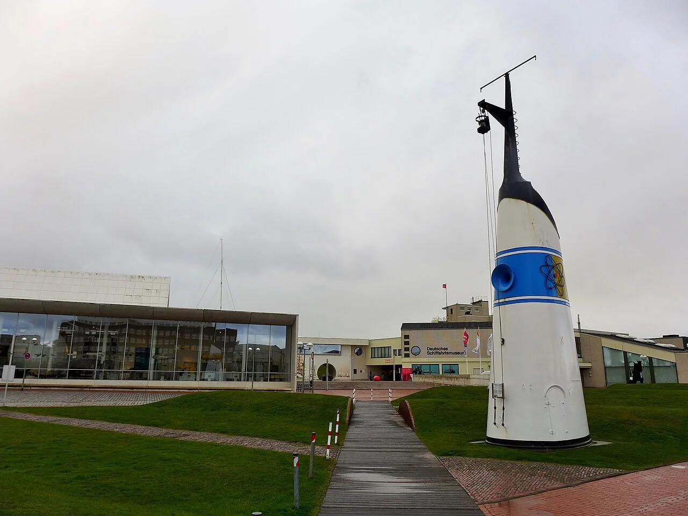
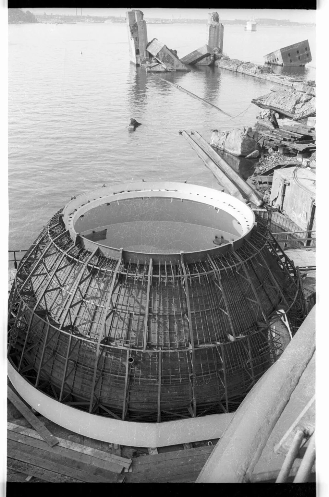
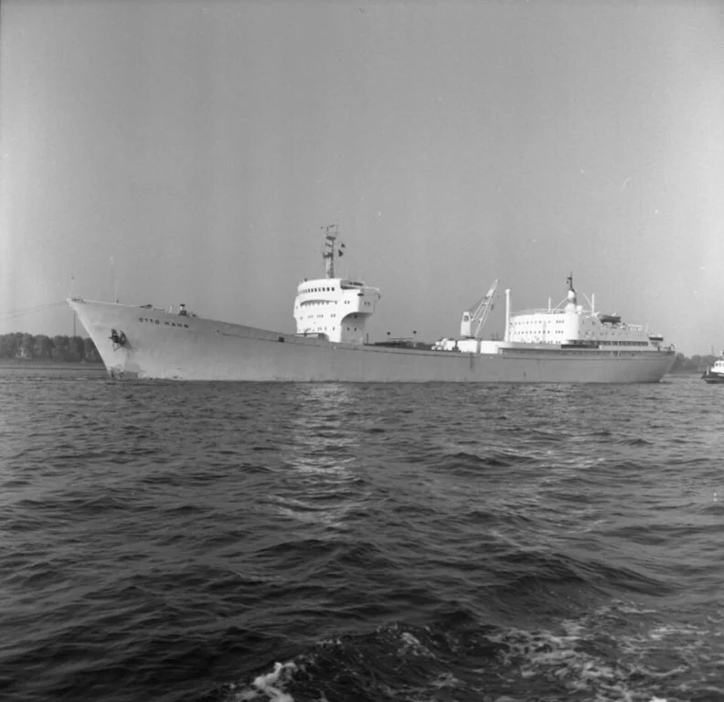
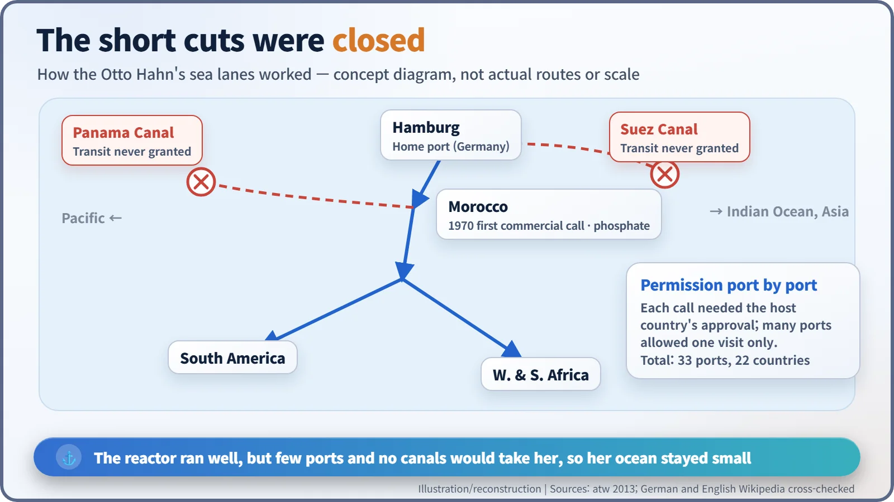

Nuclear History · 164
The Ship Is Gone, the Funnel Remains — Germany's Nuclear Cargo Ship Otto Hahn (1968–1979)
Her reactor ran smoothly for more than ten years; what she could never secure was a welcome in enough harbours.
West Germany's NS Otto Hahn, launched in Kiel in 1964 and named after the chemist whose work revealed nuclear fission, sailed on a 38 MW integrated pressurized water reactor from October 1968 to February 1979, covering some 642,000–650,000 nautical miles and calling at 33 ports in 22 countries. The reactor ran reliably, but few ports would let a nuclear ship in, the Suez and Panama canals stayed out of reach and freight never paid the bills; her reactor was removed and she ended her days as a diesel container ship.
A funnel without a ship
Outside the German Maritime Museum (Deutsches Schiffahrtsmuseum) in Bremerhaven, a white ship's funnel with a blue band and an atom emblem stands on the grass with no ship beneath it. It belonged to West Germany's nuclear-powered cargo ship, the NS Otto Hahn. The ship itself went to the breakers in 2009. The funnel, given to the museum in 1986, is what is left to tell the story. [5]

Why put a reactor in a freighter?
By the late 1950s nuclear submarines had shown what a reactor could do at sea: one fuel load lasted for years, with no refuelling stops. Merchant shipping wondered whether it could have the same advantage. The United States launched the merchant ship Savannah under the "Atoms for Peace" banner, and the Soviet Union put the nuclear icebreaker Lenin into service.
West Germany followed. In 1956 a research company for nuclear energy in shipbuilding and shipping, GKSS, was set up at Geesthacht near Hamburg, and from 1960 its main project was a nuclear cargo ship. The ship was named after the chemist Otto Hahn (1879–1968), who in late 1938, with Fritz Strassmann, found barium among the products of uranium bombarded with neutrons, the result that revealed nuclear fission. [6]
An 85-year-old at the launch
On 13 June 1964 the ship was launched at the Howaldtswerke yard (HDW) in Kiel: an ore carrier 172 m long and 16,870 gross register tons. Otto Hahn, then 85, is reported to have attended the launch. The build cost about 56 million Deutschmarks, of which the European Atomic Energy Community (Euratom) is said to have contributed 16 million. [6]

Hahn never saw his namesake at sea. He died on 28 July 1968. The reactor first went critical (that is, sustained a chain reaction on its own) on 26 August 1968, and the ship made its first voyage on 11 October 1968. [4]
A heat exchanger inside the kettle
The ship's heart was a pressurized water reactor of 38 MW thermal. Water kept from boiling by high pressure carried heat from the core to the steam generators, and the steam drove a turbine of roughly 10,000 horsepower turning the propeller.
What made it unusual was its "integrated" layout: the steam generators sat inside the reactor pressure vessel itself. Picture a kettle with the heat exchanger built in. Fewer pipes made the plant compact enough for a hull, and, as a general argument for such designs, left fewer large pipes that could break. The first core lasted about four years and close to 250,000 nautical miles, using about 22 kg of uranium-235. The first refuelling came in 1972. [6]
![Proportional timeline from 1960 to 2009 in four bands: planning and build, nuclear service from October 1968 to February 1979, refit, and service as a diesel container ship; callouts mark the 13 June 1964 launch, Otto Hahn's death on 28 July 1968, first criticality on 26 August and first voyage on 11 October 1968, first refuelling in 1972, the end of nuclear operation in February 1979, the 1983 relaunch as Trophy, the 1986 funnel donation and scrapping in 2009; four boxes give 38 MW thermal power, 642,000 to 650,000 nautical miles, 33 ports in 22 countries and 776,000 tonnes of cargo](../../assets/images/history/164-otto-hahn-nuclear-ship/fig1-lifeline.webp)
Ore, phosphate and 642,000 miles
The Otto Hahn was a research ship first and a freighter second. Besides 63 crew, she could carry around 35 researchers. Starting in 1970 with a load of phosphate in Morocco (sources disagree on whether the port was Safi or Casablanca), she carried mostly ore and phosphate. By the end of 1978 she had made 126 voyages and covered 642,000 nautical miles, carrying 776,000 tonnes of cargo. In her last full year, 1978, she made seven voyages totalling 81,161 nautical miles, spent 274 of her 308 operating days at sea, and her reactor was available 84.4 per cent of the time. From March 1977 the shipping line Hapag-Lloyd handled her operation and cargo bookings. Looking back, the German nuclear journal atw summed it up: "The technology ran reliably." [1] [3] [4]
Many sources give about 650,000 nautical miles instead. That figure appears to count the final voyages of early 1979 and round up. Either way, it is close to thirty times around the Earth.

Passed by the engineers, stopped at the harbour gate
The trouble was not at sea but in port. A nuclear ship needed the host country's permission every time it called, and permission was hard to get. During her nuclear years she visited 33 ports in 22 countries, many of them only once under special approval. According to German and English reference works, she was never allowed through the Suez or Panama canals, although the Suez Canal was in any case closed to all shipping from 1967 to 1975 after the Six-Day War. Freight earnings never covered the running costs. [3] [6]

Retirement and afterlife
In February 1979, once the second core was used up, nuclear operation ended. Running for another four years on a third core would have cost more than the expected research results could justify. From 1980 to 1982 the reactor was removed and the ship decontaminated, and in 1983 she returned to sea as the diesel container ship Trophy. After several more names she was scrapped in 2009: in Bangladesh according to the German Maritime Museum, at Alang in India according to other accounts. The reactor pressure vessel is reported to be stored at the research centre site in Geesthacht. [2] [5] [7]
The Otto Hahn showed that a reactor could run well at sea for more than ten years. She also showed that new technology needs more than a good machine; it needs harbours willing to let it in. The lonely funnel in Bremerhaven stands for both lessons.